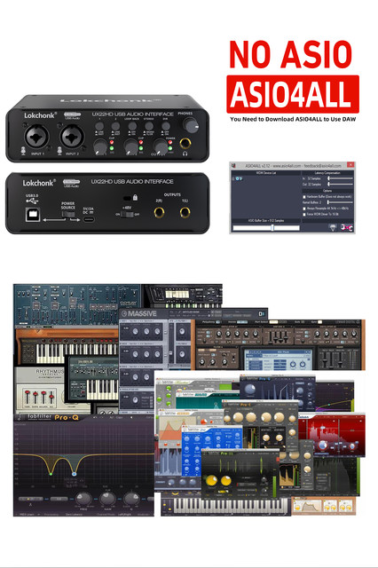
✅【Pro Audio Interface and Sound Card】supports up to 32-bit/192kHz high-resolution audio for professional monitoring and listening. It has left and right channel inputs for connecting microphones and instruments for music production. Stream 2 outputs from 2 inputs to your computer with ultra-low latency. Your recording will retain all its sound quality, so you can hear all the details in the track as you play it back.
✅ 【2-In/2-Out and connect more devices】Portable audio interface with 2i2 jacks: 2 combined XLR/MIC/LINE inputs with phantom power for recording guitar, vocal, or line input signals. Two independent TRS/TS ( 6.35 mm ) stereo jacks connect to PA speakers, active monitors, amplifiers, and recording equipment. You can also select 1/4-inch (about 0.6 cm) TRS (balanced connection) and TS (unbalanced connection) to connect different devices.
✅【48V phantom power and microphone preamp】This USB audio interface has a built-in 48V phantom power and microphone preamp. It can be used with a separate boutique preamplifier, with lots of headroom, low distortion, and ultra-low noise. Both mic preamps have independent volume control knobs, signal indicators, overload indicators, and quick fade buttons. By using condenser microphones, you'll be able to inject excellent clarity and detail into your recordings. Perfect for picking up a guitar or recording vocals
✅【Studio-quality recording and clear low-noise listening】With EBXYA's high-performance converters, you can achieve professional recordings. Your recordings will retain all their sound quality, making you sound like your favorite artists. Two low-noise balanced outputs provide clean audio playback. Hear all the details and nuances of your tracks or music from Spotify, Apple Music, and Amazon Music. Plug in your headphones through the outputs for private, high-fidelity listening
✅【Plug & Play & Recording Software Compatible】2X2 USB audio interface supports Mac OS and Windows XP or higher, no need to download any drivers. Record, podcast, and stream high-quality audio quickly and easily. Compatible with popular recording software, including Avid Pro Tools, Ableton Live, Steinberg Cubase, and more. Small, ultra-portable size lets you take it with you anywhere, providing flexible options for your music production.
✅Technical specifications:
(1) MIC INPUT 1-2(balanced )
Frequency response:-1/-1dB ；20Hz- 20kHz
Dynamic range:82 dB
THD +N: 0.03%,1kHz
Maximum input level: +6dBu Input resistance 4kQ2
Gain range: +3dB- +60dB
(2) HI-Z INPUT 2 (Unbalanced)
Maximum input level: +3.0dBV
Input resistance: 1 MQ
Gain range:-10dB -+40dB
(3) LINE INPUT 1/2(balance)
Maximum input level:+10dBu
Input resistance: 18.5kQ
Gain range:-10dB -+40dB
✅Product List:
Sound card*1
USB power cable*1
English manual*1
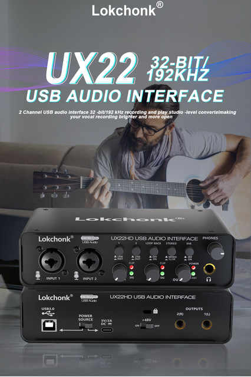
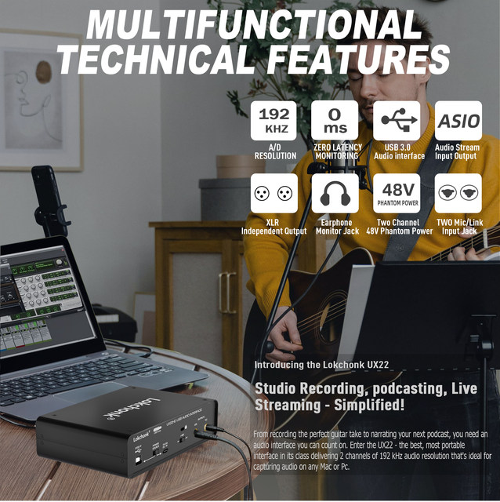
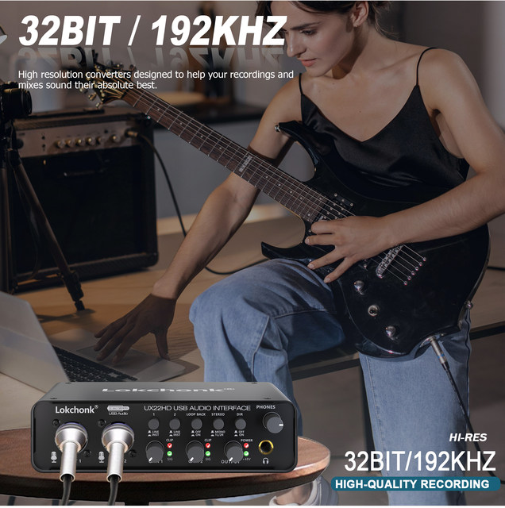
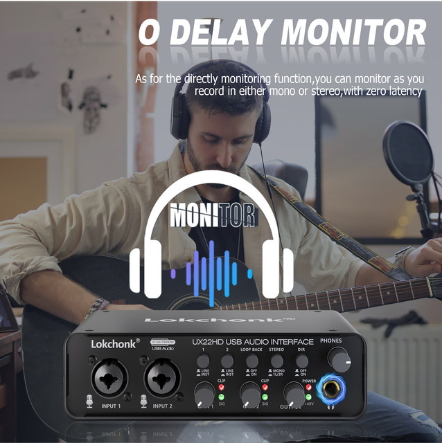
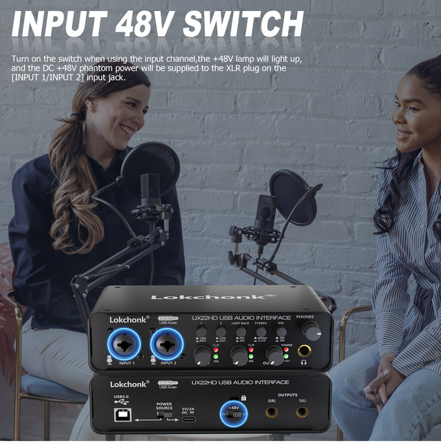
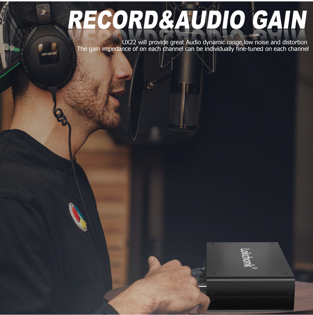
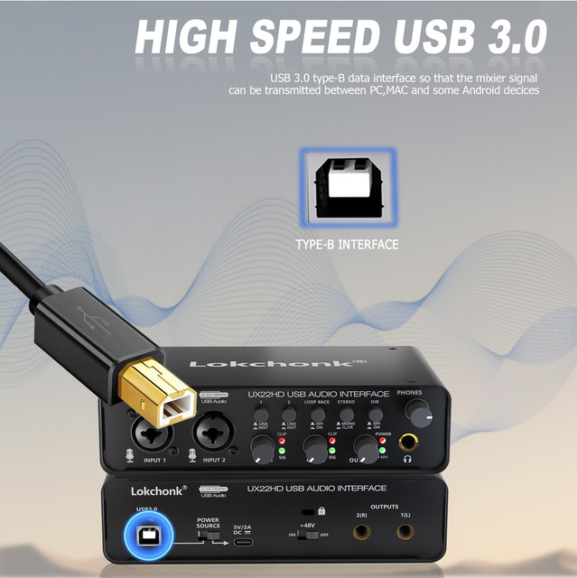
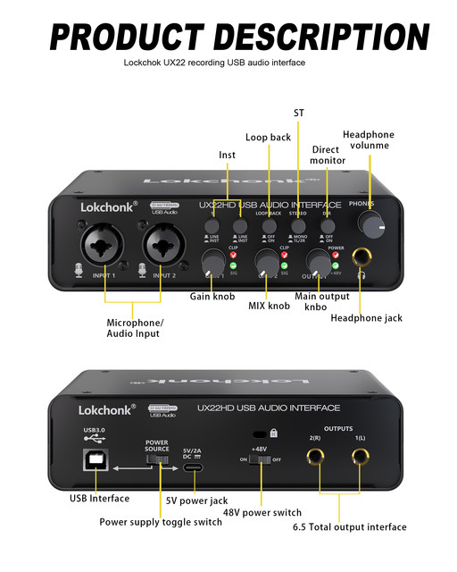
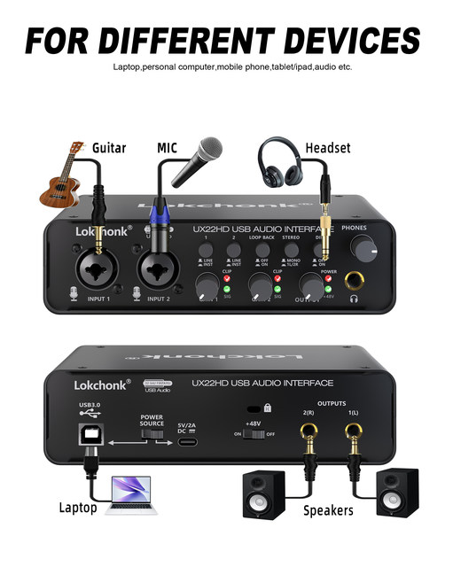
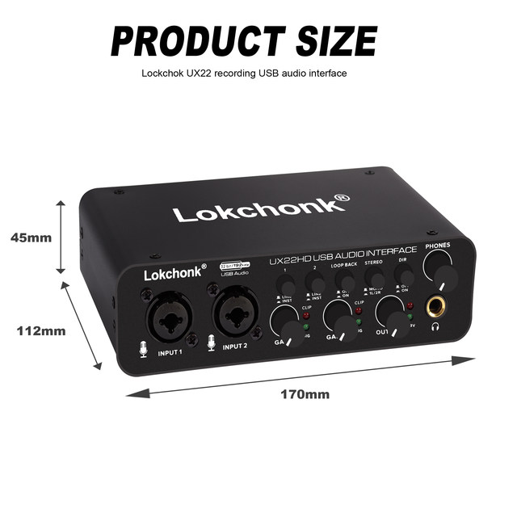
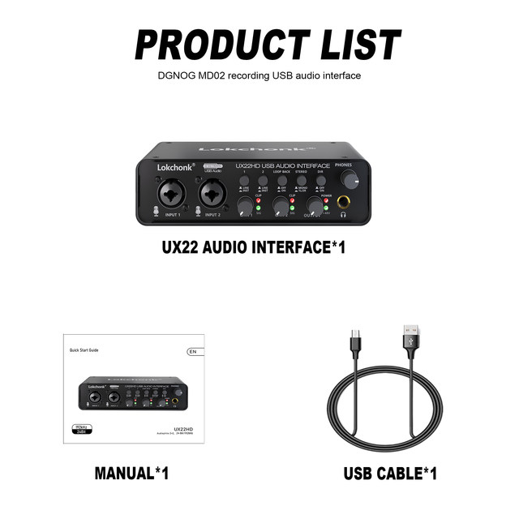